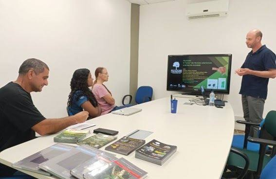
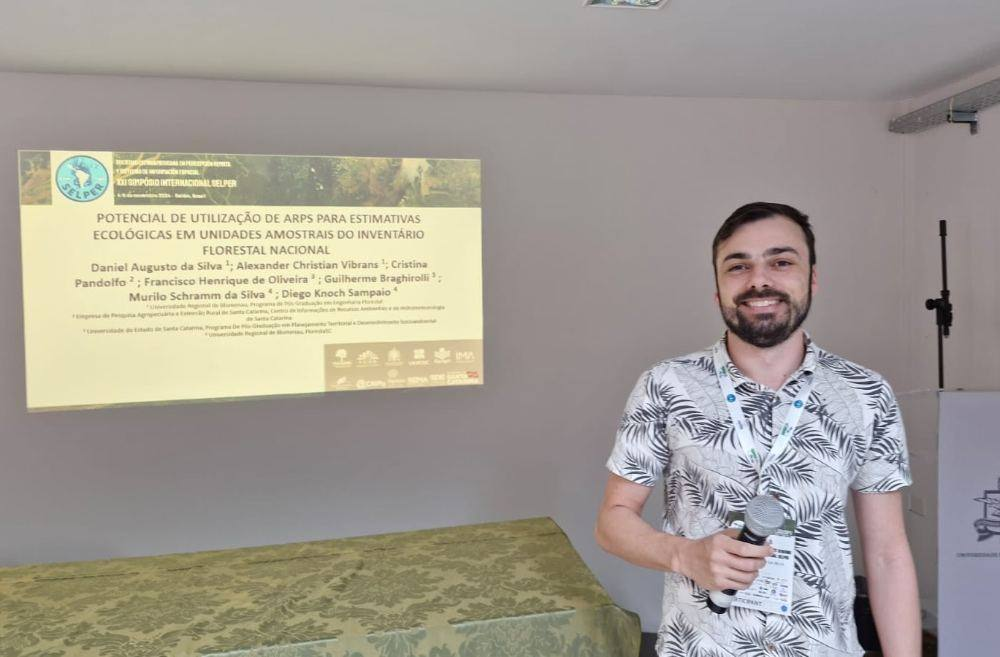
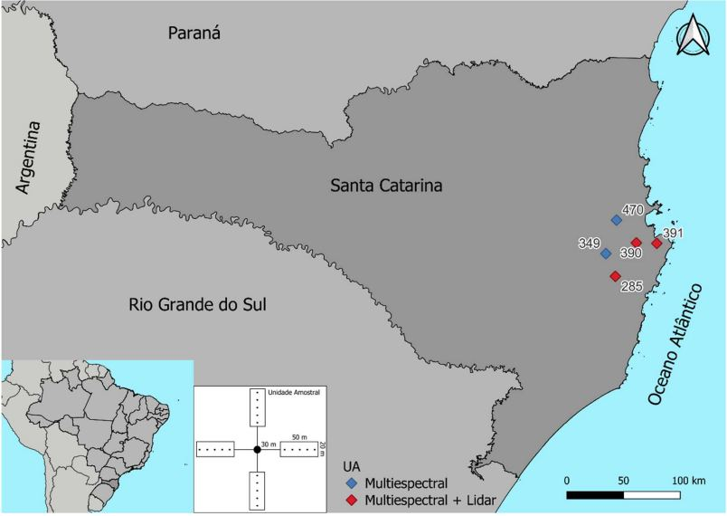
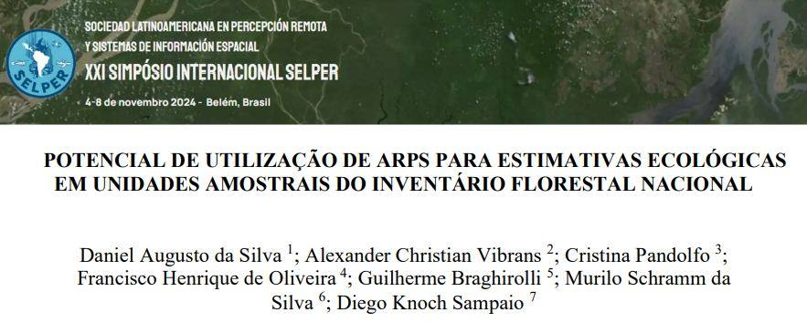

Pesquisadores do FlorestaSC visitam o CPTEC/INPE (SP)
10 de Dezembro de 2024
Esta parte da página usa um recurso interativo do Google Sites que não pôde ser copiado. Ver no site atual ↗
Os pesquisadores do programa FlorestaSC/FURB, MSc. Adilson Luiz Nicoletti e Prof. Dr. Jonathan Gil Müller, do Programa de Pós-Graduação em Engenharia Ambiental (PPGEA), visitaram o Centro de Previsão de Tempo e Estudos Climáticos (CPTEC) do Instituto Nacional de Pesquisas Espaciais (INPE), em Cachoeira Paulista/SP, entre os dias 26 e 28 de novembro de 2024. Eles foram recepcionados pela Dra. Simone Marilene Sievert da Costa Coelho, professora do Programa de Pós-Graduação em Meteorologia (PGMet) e pesquisadora na Divisão de Satélites e Sensores Ambientais (DISSM) do CPTEC.
O objetivo da visita foi compartilhar conhecimentos e discutir potenciais parcerias entre as instituições na área de sensoriamento remoto e estudos climáticos.
Prof. Dr. Jonathan Gil Müller
Durante a ocasião, o Prof. Dr. Jonathan Gil Müller ministrou a palestra intitulada Impactos da variabilidade da atividade solar em imagens multiespectrais: contribuições para a melhoria da acuracidade da reflectância ToA do sensor ETM+/Landsat-7, baseada em sua pesquisa de doutorado realizada no PPGEA/FURB. Ele abordou questões que impactam a acuracidade de informações temporais obtidas por técnicas de sensoriamento remoto, enfatizando que a correção desses fatores pode aumentar a confiabilidade de estudos baseados nesse tipo de dado, como monitoramento e gerenciamento de recursos naturais e pesquisas sobre mudanças climáticas.
O pesquisador MSc. Adilson Luiz Nicoletti apresentou a palestra intitulada FlorestaSC: O ‘censo’ das florestas catarinenses a serviço da sociedade, na qual compartilhou a metodologia do programa e os principais resultados relacionados ao crescimento das florestas, estoque e sequestro de carbono, riqueza de espécies arbóreas, mapeamento e monitoramento da cobertura florestal de Santa Catarina. Adilson também destacou as novas ações do programa, como o uso de drone equipado com sensores multiespectrais e LIDAR, a modernização do herbário e a divulgação científica sobre as florestas por meio de realidade virtual. A Profa. Dra. Simone também apresentou algumas pesquisas e produtos desenvolvidos no CPTEC/INPE.

Pesquisador MSc. Adilson Luiz Nicoletti
Os pesquisadores prestigiaram ainda a cerimônia de comemoração dos 30 anos do CPTEC, que contou com a presença de Marcio Rojas da Cruz, Coordenador Geral de Ciência do Clima e Sustentabilidade (representando a Ministra de Ciência, Tecnologia e Inovação, Luciana Santos); Clezio Marcos de Nardin, atual Diretor do INPE; Gilvan Sampaio de Oliveira, Coordenador Geral do CPTEC; Marcio Barbosa, ex-Diretor do INPE (1989-2001); e Ailton Vieira, prefeito de Cachoeira Paulista/SP, além de outras autoridades públicas, funcionários do CPTEC e membros da comunidade.
Pesquisador realiza palestra no XXI Simpósio Internacional Selper
12 de Novembro de 2024

O Dr. Daniel Augusto da Silva, pesquisador do FlorestaSC, participou do XXI Simpósio Internacional Selper: Além do dossel – Tecnologias e Aplicações de Sensoriamento Remoto, realizado em Belém do Pará nos dias 4 a 8 de novembro de 2024.
O evento teve como objetivo a difusão de conhecimentos sobre novas tecnologias em sensoriamento remoto, SIG e áreas afins, bem como a promoção de pesquisas, cooperação e divulgação de projetos e programas de ensino na área do meio ambiente.

Unidades amostrais sobrevoadas neste estudo e detalhe com as dimensões das unidades amostrais utilizadas no FlorestaSC
O pesquisador do FlorestaSC apresentou o trabalho intitulado POTENCIAL DE UTILIZAÇÃO DE RPAS PARA ESTIMATIVAS ECOLÓGICAS EM UNIDADES AMOSTRAIS DO INVENTÁRIO FLORESTAL NACIONAL, desenvolvido pela equipe de sensoriamento remoto do FlorestaSC e pesquisadores da Epagri-Ciram e UDESC (Alexander Christian Vibrans, Cristina Pandolfo, Francisco Henrique de Oliveira, Guilherme Braghirolli, Murilo Schramm da Silva e Diego Knoch Sampaio). O trabalho abordou estimativas de atributos florestais calculadas a partir de métricas derivadas de imagens multiespectrais e nuvens de pontos LiDAR, obtidas através de sensores acoplados em drone.
A elaboração do trabalho foi apoiada financeiramente pela Fundação de Amparo à Pesquisa e Inovação Do Estado De Santa (FAPESC) e Coordenação de Aperfeiçoamento de Pessoal de Nível Superior – Brasil (CAPES) – Finance Code 001.
O trabalho pode ser lido na íntegra em: https://static.even3.com/anais/826452.pdf

Três projetos são aprovadas pelo edital da FAPESC
19 de Março de 2024
Pesquisadores do FlorestaSC conquistaram a aprovação de três propostas submetidas à Chamada Pública "FAPESC Nº 12/2023 - Programa de apoio à infraestrutura e ao uso de tecnologias para inventário, monitoramento e conservação das florestas e formações vegetacionais de interface marinho-costeira de Santa Catarina."
A duração dos projetos aprovados será de 27 meses e o recurso obtido possibilitará a captação de imagens com drone, ampliação da amostragem da vegetação litorânea, modernização do Herbário FURB e realização de atividades de divulgação científica utilizando tecnologias modernas.
Confira os três (3) projetos e seus objetivos:
I) FlorestaSC – novas tecnologias a serviço da geração de conhecimento
Coordenação: Prof. Dr. Alexander Christian Vibrans
- Estimar atributos florestais com uso de dados multiespectrais e LiDAR coletados com drone nas Unidades Amostrais do FlorestaSC
- Aprofundar estudos sobre formações vegetacionais de interface marinho-costeira de Santa Catarina
- Avaliar o efeito das mudanças climáticas sobre a distribuição e diversidade de espécies arbóreas criticamente ameaçadas de extinção
- Calibrar modelos regionais para estimar a altura total das árvores em cada Unidade amostral
- Aplicar dados de sensoriamento remoto para aumentar a precisão de estimativas de biomassa florestal e carbono das florestas catarinenses
- Avaliar a mortalidade de espécies arbóreas em Santa Catarina
II) FlorestaSC: divulgação científica sobre florestas utilizando tecnologias digitais baseadas em realidade virtual, aumentada e alternativa
Coordenação: Prof. Dr. Maurício Capobianco Lopes
- Disponibilizar material de divulgação científica que permita interações com folhetos explicativos sobre a floresta por meio da realidade aumentada; e que promova a imersão em ambientes florestais catarinenses simulados por meio de realidade imersiva
- Disponibilizar um aplicativo para visitação a um parque florestal catarinense que permita aprofundar o conhecimento sobre o parque por meio de realidade alternativa
III) Modernização do Herbário Dr. Roberto Miguel Klein, conservando a biodiversidade
Coordenação: Prof. Dr. André Luís de Gasper
- Garantir a adequada conservação e expansão da coleção; melhorar e otimizar o acondicionamento das amostras do herbário
- Revisar e restaurar amostras danificadas; separar e doar duplicatas
- Reabertura do herbário ao público em geral para consulta
Nova etapa de campo do 3º Ciclo de medições foi iniciada
15 de Fevereiro de 2024
Da esquerda para direita: Anderson Kassner Filho, Marlon Yuri Andrade (líder da equipe), Leander Augusto Bini e Felipe Eduardo Zimmermann.
Neste mês de fevereiro foi iniciada uma nova etapa de medição de campo, dando continuidade ao 3º ciclo de medições. Isso significa que temos um conjunto de parcelas que estão sendo medidas pela 3º vez, o que possibilita conhecer diversos aspectos da dinâmica da floresta, como as mudanças na composição de espécies e dos estoques de biomassa e carbono.
Além da remedição das árvores sobreviventes do ciclo anterior e medição dos indivíduos ingressos (árvores que alcançam DAP ≥ 10 cm), tem sido realizada também a obtenção de fotos hemisféricas e medição de alturas com clinômetro para calibrar modelos de estimativa de altura.
A equipe atual é integrada pelo engenheiro florestal Marlon Yuri Andrade (líder da equipe), o biólogo Anderson Kassner Filho e os graduandos da FURB Leander Augusto Bini e Felipe Eduardo Zimmermann.
Nesta etapa de 2024, a equipe de campo tem como meta realizar a remedição de 60 unidades amostrais, distribuídas por todo o estado, conforme o mapa. Destas, 34 unidades amostrais estão situadas na Floresta Ombrófila Mista, 21 na Floresta Ombrófila Densa e 5 na Floresta Estacional Decidual. A equipe iniciou suas atividades no dia 5 de fevereiro e já remediu algumas unidades amostrais na região de Lages. Nos próximos dias, eles deverão seguir trabalhando no planalto sul, avançando na sequencia, para o meio oeste e planalto norte. Nas últimas campanhas de campo desta etapa, deverão ser contempladas as unidades amostrais do Vale do Itajaí e litoral catarinense.
Acompanhe nossas redes sociais para saber por onde anda nossa equipe e como está o desenvolvimento das atividades de campo.
Obtenção de fotos hemisféricas.
Localização das árvores medidas no ciclo anterior.
Alinhamento da unidade amostral, cruzada por um rio.
Artigo sobre o Mapeamento da Restinga em Santa Catarina é publicado!
09 de Fevereiro de 2024
Saiu uma importante publicação sobre o mapeamento da Restinga realizado pelo FlorestaSC para o nosso estado. O artigo intitulado Mapeamento das Áreas Potenciais (originais) e Remanescentes de Restinga: uma proposta metodológica para Santa Catarina, Brasil foi publicado na Revista Brasileira de Geografia Física. Este artigo é fruto de um trabalho de 3 anos de pesquisadores do FlorestaSC - sob a coordenação do prof. Alexander C. Vibrans e do Eng. Florestal Adilson L. Nicoletti. Através deste trabalho, foi gerado um mapeamento sólido da restinga para aplicação em ações de conservação, planejamento territorial, licenciamento e controle ambiental.
No artigo são apresentados os indicadores físicos utilizados para delimitar as áreas potenciais de restinga, bem como a metodologia empregada para identificar os remanescentes de restinga.
As Áreas Potenciais de Restinga (“áreas originais estimadas”) foram delimitadas através do cruzamento de 5 camadas geográficas: 1) Topografia: altitude; 2) Hidrogeologia: subdomínio hidrogeológico; 3) Geomorfologia: modelo de acumulação; 4) Pedologia: classe de solo; 5) Geodiversidade: relevo
As Áreas Remanescentes de Restinga foram mapeadas utilizando imagens de satélite Landsat-8 (2017) e classificação Random Forest
Dentre os resultados encontrados, destaca-se que:
- A área total potencial de restinga é de 1.733,8 km²
- A área remanescente de restinga equivale a 46% da área potencial.
- Áreas de pastagem ou campo natural ocupam 23,2%da área potencial, seguida das áreas construídas ou urbanizadas com 18,5%.
Acesse o Artigo
O artigo completo pode ser acessado pelo link.
Acesse o Mapa
É possível baixar o mapa da restinga através da nossa plataforma de mapas.
Estudo mostra que 82% das espécies de árvores exclusivas da Mata Atlântica correm risco de extinção
01 de Fevereiro de 2024
Os pesquisadores do FlorestaSC, André Luís de Gasper e Alexander Vibrans, colaboraram em um estudo publicado pela revista Science que aponta que a maioria das espécies de árvores da Mata Atlântica estão ameaçadas de extinção. A pesquisa, que durou mais de 2 anos, foi coordenada pelo pesquisador Renato Lima, professor de ecologia da Escola Superior de Agricultura Luiz de Queiroz (Esalq), da Universidade de São Paulo (USP) em Piracicaba (SP).
Esta é a primeira vez que todas as populações das quase 5 mil espécies arbóreas da Mata Atlântica, do Rio Grande do Sul ao Rio Grande do Norte, tiveram seu grau de ameaça avaliado conforme os critérios da União Internacional para a Conservação da Natureza (IUCN, na sigla em inglês), maior referência global em espécies ameaçadas.
Mais de 3 milhões de registros de herbários e inventários florestais foram considerados, com riqueza de detalhes sobre as espécies, uso comercial e grau de aumento ou redução de sua população existente na Mata Atlântica. Como o bioma inclui Santa Catarina, e consequentemente Blumenau, as estatísticas do programa FlorestaSC, que envolve a FURB, foram consideradas pelo estudo. Com os cálculos desenvolvidos pelo grupo foi possível estimar quantas árvores de cada espécie existem e quanto deveria existir se não houvesse o desmatamento.
O QUE MOSTRAM OS NÚMEROS?
Do total de 4.950 espécies arbóreas presentes no bioma (incluindo as que ocorrem também em outros domínios), 65% estão com suas populações ameaçadas de alguma forma. Quando são analisadas as espécies endêmicas (mais de 2 mil), ou seja, exclusivas da Mata Atlântica, o percentual de ameaça de extinção sobe para 82%.
Outro dado que assusta é que apenas 7% das espécies endêmicas tiveram declínio populacional abaixo de 30% nas últimas três gerações, indicando uma tendência de piora no desmatamento no Brasil. A classificação internacional IUCN já considera que, acima desse patamar, a espécie já pode ser considerada “Vulnerável” (redução da população entre 30% e 50%), que é a primeira categoria de ameaça de extinção. Acima dessa, estão “Em Perigo” (entre 50% e 80%) e “Criticamente em Perigo” (acima de 80%).
Foto: Anderson Kassner Filho
Entre as espécies ameaçadas, 75% delas estão na categoria “Em Perigo”. É o caso da araucária, do palmito-juçara, da erva-mate e da canela-sassafrás, que tiveram declínios de pelo menos 50% da sua população. O pau-brasil, típico do bioma, foi listado como “Criticamente em Perigo”, dada a redução estimada de 84% da sua população.
Cinco espécies consideradas extintas na natureza foram redescobertas no estudo, mas nenhuma delas ocorre em Santa Catarina.
Foto: Renato Lima
O QUE PODE SER FEITO DIANTE DESTA SITUAÇÃO?
Para o Prof. André de Gasper, as informações geradas no estudo são primordiais para a criação de políticas públicas de conservação de espécies:
“A gente quer saber o grau de ameaça para fazer políticas de conservação, categorizar aquelas que são vulneráveis, em perigo e criticamente em perigo, que é a escala mais grave de ameaça, de extinção, e assim poder direcionar melhor os recursos para tentar conservar essas espécies. (...)
O Prof. Renato Lima aponta que seria necessário fazer planos de ação para conservar ao menos os genes das espécies mais ameaçadas, plantando em jardins botânicos, por exemplo.
"Às vezes ela está extinta na natureza, mas ela está em algum jardim botânico. Assim como ocorre com algumas espécies animais". completou.
Outra medida essencial é conservar os fragmentos que ainda sobraram das espécies em extinção. "Melhorar as condições deles para que essas espécies possam se manter a longo prazo nessas áreas", explicou.
"É possível reverter sim, mas como em geral a gente vê que a Mata Atlântica continua sendo desmatada, continua sendo perturbada, o prognóstico não é muito bom. A gente teria que realmente parar e tomar providências mais drásticas do que tem sido tomadas atualmente."
Mais uma alternativa que pode trazer resultados a longo prazo é a restauração florestal. "Se a gente for plantar floresta e nessas florestas a gente usar espécies que estão em alto risco de ameaça na mata atlântica, a gente consegue repor na natureza um pouco das populações que foram perdidas. Consegue, ao longo do tempo, dizer que as populações estão sendo repostas."
O artigo pode ser lido na íntegra em: https://www.science.org/doi/10.1126/science.abq5099.
Acompanhe também nossas redes sociais para ficar por dentro das ações do projeto.
FlorestaSC
florestasc@furb.br 47 3221-6100
Página migrada de floresta.sc.gov.br.